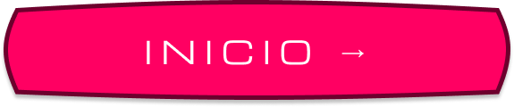
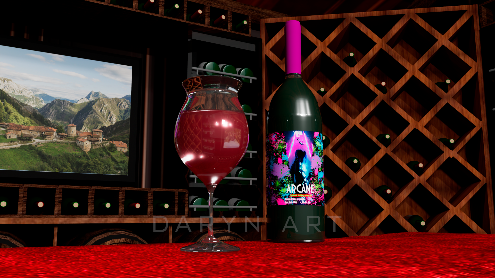
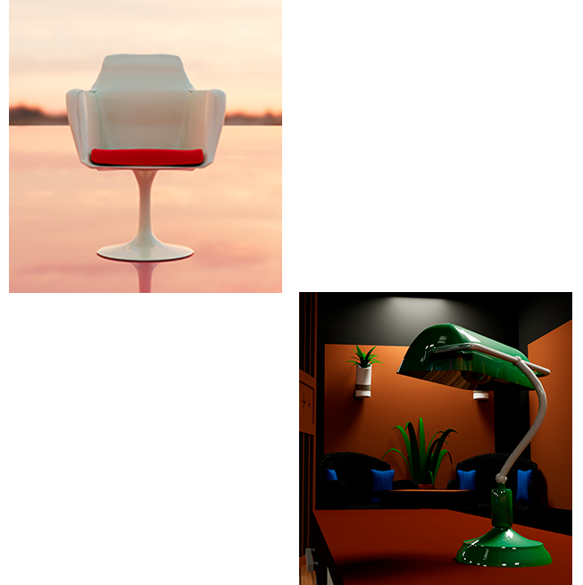
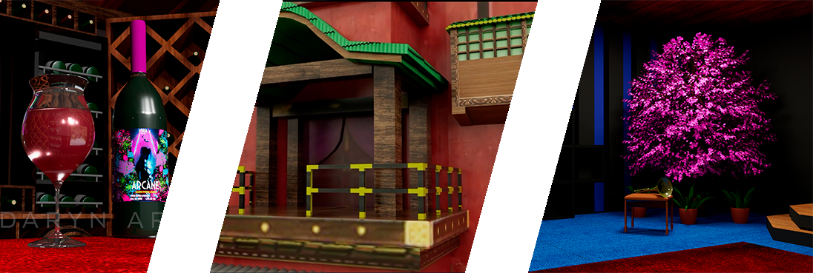

SOBRE EL
DISEÑADOR

CHRISTIAN
BUGARIN
Soy un artista digital enfocado en la creación de contenido visual mediante modelado 3D, ilustración y edición audiovisual. Mi trabajo se basa en la combinación de creatividad, técnica y atención al detalle, buscando siempre transformar ideas en piezas visuales atractivas y funcionales. Mi meta es dedicarme a la edición audiovisual, modelado 3D y efectos visuales para crear experiencias permanentes en las personas. He trabajado eficazmente en equipo e individual en Stands para cine, cortometrajes y animaciones, resaltando siempre la calidad profesional.


EXPERIENCIA
Desarrollo en la creación de contenido visual mediante modelado 3D, ilustración y edición audiovisual. Ha desarrollado proyectos enfocados en la calidad estética, la innovación y la atención al detalle, aplicando herramientas digitales para transformar ideas en piezas visuales funcionales y atractivas. El trabajo abarca la creación de modelos 3D optimizados, contenido visual para distintos formatos y la producción de material audiovisual, cada uno adaptándose a las necesidades de cada proyecto. Cada proyecto se caracteriza por su enfoque creativo, capacidad de aprendizaje constante y compromiso con la mejora continua.

PROPUESTA DE VALOR
En Daryn Art, cada proyecto se desarrolla con un enfoque personalizado, priorizando la calidad, la innovación y la comunicación constante con el cliente. La propuesta se centra en ofrecer soluciones visuales integrales que combinan arte y tecnología, asegurando resultados profesionales adaptados a las necesidades específicas de cada proyecto. Más que solo diseño, se busca crear experiencias visuales que destaquen y generen impacto.

MÉRITOS
CORTOMETRAJE
“En la oscuridad” seleccionado entre 30 para exposición de diseño en campus.
CAJAS ESCENOGRÁFICAS
Cajas de 60cm x 90cm con animación proyectada seleccionadas para exhibición escolar.
EXPOSICIONES
Propuesta de exposición para un proyecto: Stand de 1.80m x 2m) ante la SEP
